پایگاه اطلاع رسانی شهدای ارتش
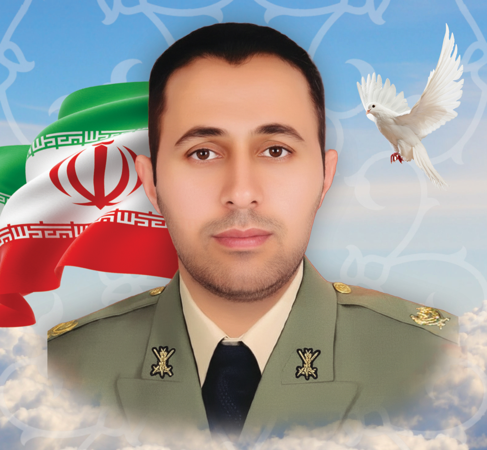
شهید مسعود زارع خفری
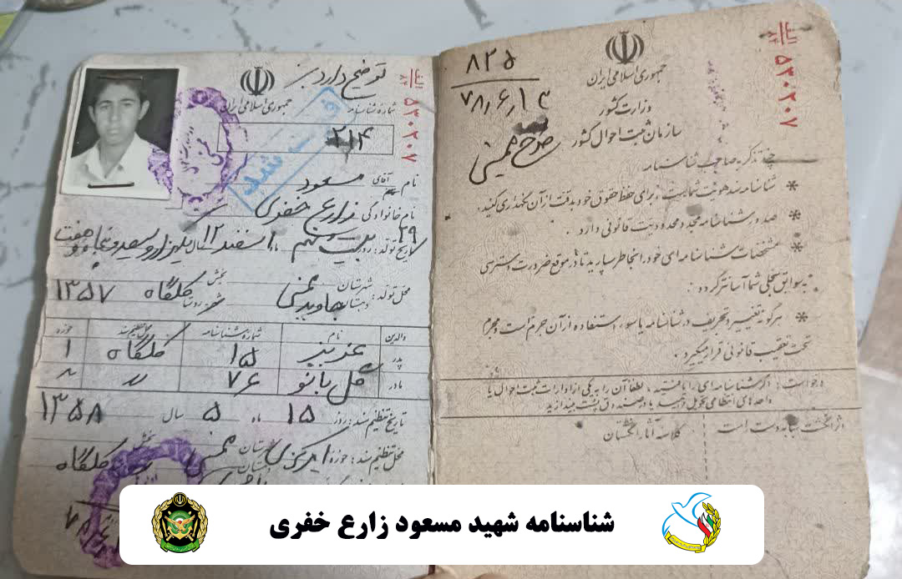
زندگینامه شهید
28 اسفند 1357 در نورآباد ممسنی از توابع استان فارس به دنیا آمد. پدر گرامیاش «عزیز» نام داشت که به رحمت ایزدی پیوست و مادر محترمش «گلبانو» نام دارد. ایام کودکی را به همراه دو برادر و یک خواهر خود و بهخوبی در آغوش پرمهر و گرم و صمیمی خانواده سپری کرد و به سن فراگیری علم و دانش رسید. تحصیلات دوره ابتدایی و راهنمایی و متوسطه را در زادگاهش به اتمام رساند و در بیستم خرداد 1377 موفق به اخذ مدرک دیپلم شد سپس در آزمون ورودی دانشگاه افسری امام علی (ع) شرکت کرد و با قبولی در آن و انجام معاینات جسمانی و آزمایش ورزش، در سیزدهم تیر ۱۳۷۷ به جمع دانشجویان این دانشگاه پیوست.
دوران تحصیلی سهساله و شبانهروزی دانشگاه افسری را با طی دروس مصوب علمی و نیز طی اردوگاههای رزمی کویر، کوهستان، زمستانی، رزم انفرادی، سوارکاری، شنا، زندگی در شرایط سخت، فراگیری آموزش قطبنما و آموزش رانندگی با خودرو و تیراندازی با سلاحهای تفنگ ژ 3، کلت کالیبر ۴۵، کلاشنیکف، تیربار ژ ۳، تیربار کالیبر ۵۰، آر.پی.جی ۷، نارنجک دستی و تفنگی آموخت و در چهاردهم اسفند ۱۳۸۰ به اخذ دانشنامه کارشناسی و درجه ستواندومی نائل آمد. پس از آن برای گذراندن دوره مقدماتی رستهای پدافند هوایی، به مرکز آموزش توپخانه اصفهان عزیمت کرد و پس از اتمام دوره یکساله آن، به لشکر ۸۸ زرهی زاهدان اختصاص یافت و به مدت هفت سال و شش ماه بهعنوان افسر اجرائیات و فرمانده آتشبار پدافند هوایی در گردان ۳۷۹ توپخانه پدافند هوایی ۲۳ م.م این لشکر انجام وظیفه نمود. سیر مراحل ترفیعاتی شهید زارع خفری بهاینترتیب بود:
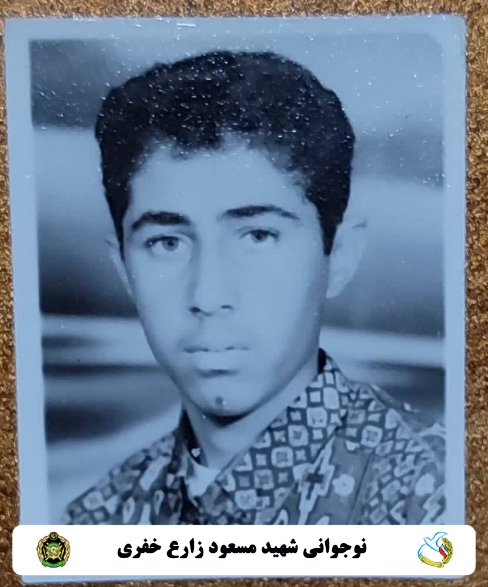
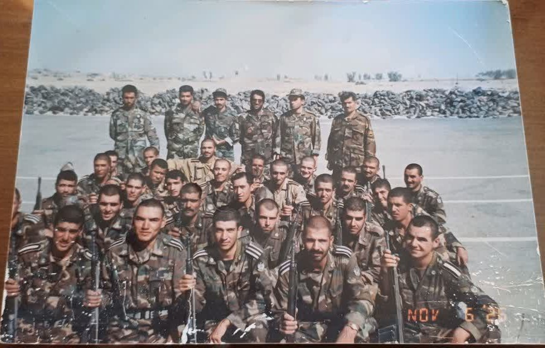
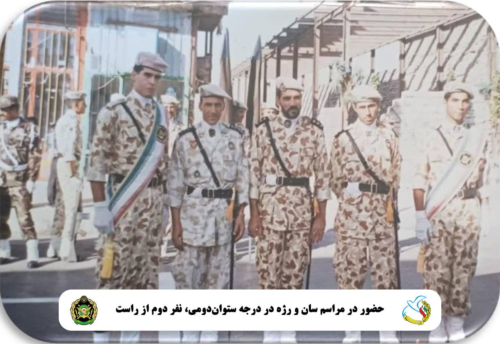
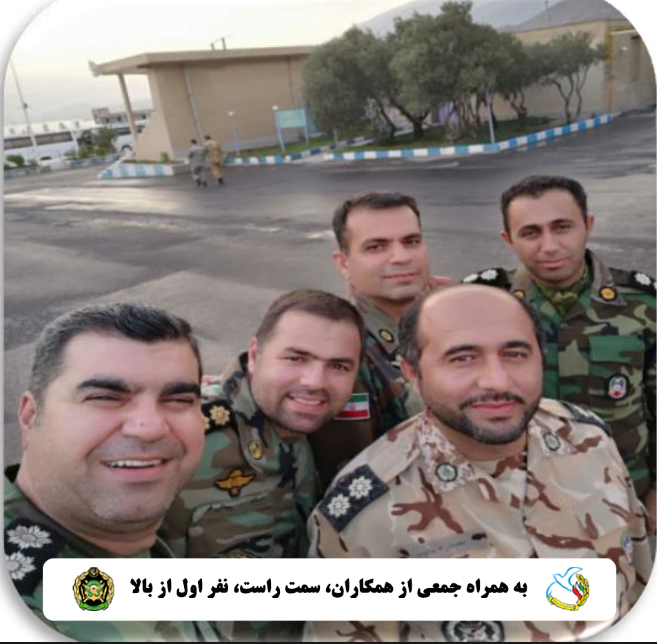
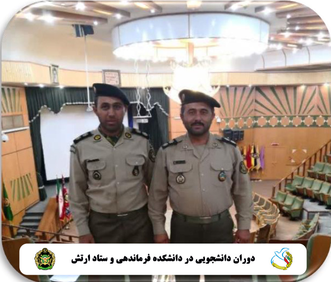
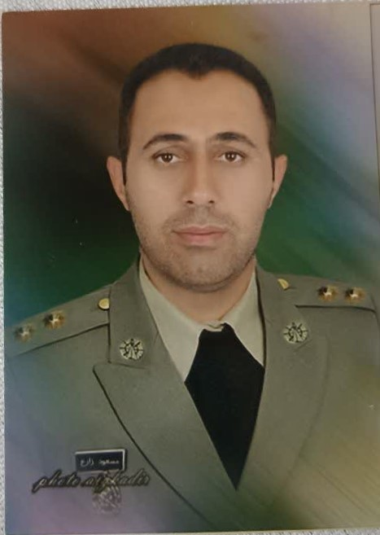
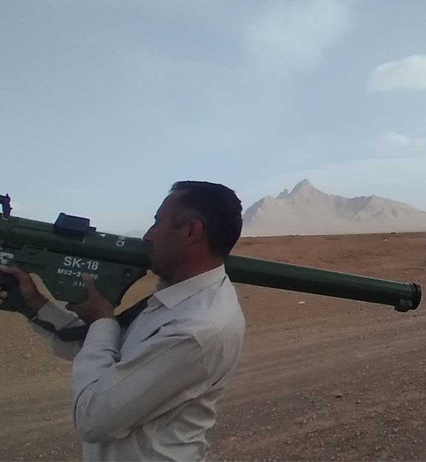
خاطرات همسر شهید
سلام.
در حقیقت من و مسعود با هم خیلی غریبه نبودیم و مادرم، دخترعموی مسعود بود. اولین باری که مسعود را دیدم، محل خدمتش در شهر زابل بود. نوروز سال ۱۳۸۲ بود که من برای عیددیدنی به منزل خالهام در روستای «کلگاه جاوید» رفته بودم. محل زندگی مسعود هم در همان روستا بود و از قضا مسعود هم برای عیددیدنی به خانه خالهام آمد. این اولین آشنایی من با مسعود بود. بار دوم که مسعود را دیدم، بر میگردد به زمانی که تعطیلات نوروز تمام شد و من میخواستم به نورآباد برگردم و خودم را به جاده رساندم که دیدم مسعود و برادرش (داود) هم سر جاده هستند. همگی منتظر خودرو بودیم تا به نورآباد بازگردیم. زمانی که به نورآباد رسیدیم، از مسعود و برادرش خداحافظی کردم و دیگر مسعود را ندیدم تا تیرماه همان سال که او را در عروسی دخترخالهام و پسرعمویش دیدم. در همان عروسی بود که خانواده مسعود پیش من آمدند و از خوبیهای زیاد مسعود گفتند. چند ماه پس از عروسی و در اواخر شهریور بود که پسر داییام از طرف خانواده مسعود برای من، پیغام خواستگاری آورد و بعد قبول خانوادهام، مسعود و خانوادهاش برای خواستگاری به منزل ما آمدند. در همان شب و هنگامی که با مسعود صحبت کردم، او از سختی شرایط کارش به من توضیح داد و گفت: «ما بهخاطر شرایط کاری، باید دور از خانواده زندگی کنیم.» آن شب شیرین، مراسم خواستگاری به اتمام رسید و چند روز بعد جهت آزمایش خون، به آزمایشگاه رفتیم و جواب مثبت گرفتیم.
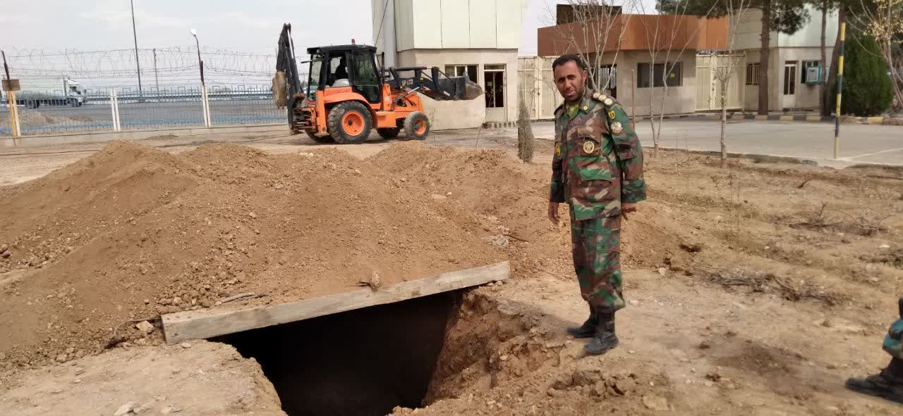
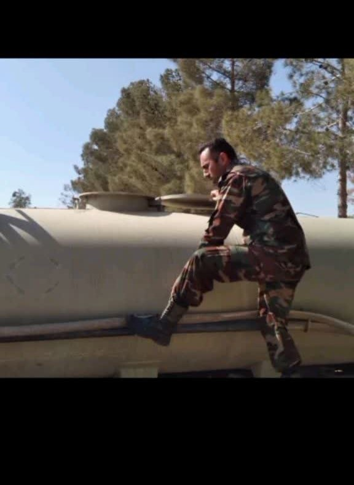
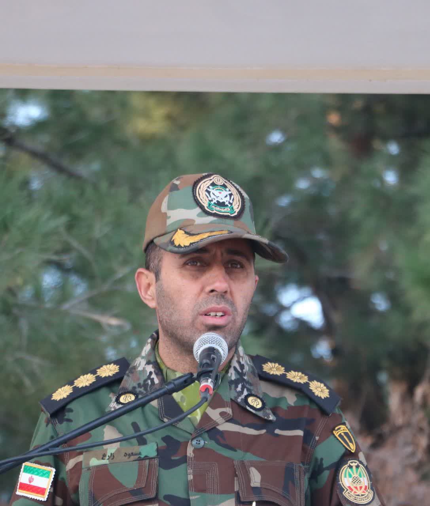
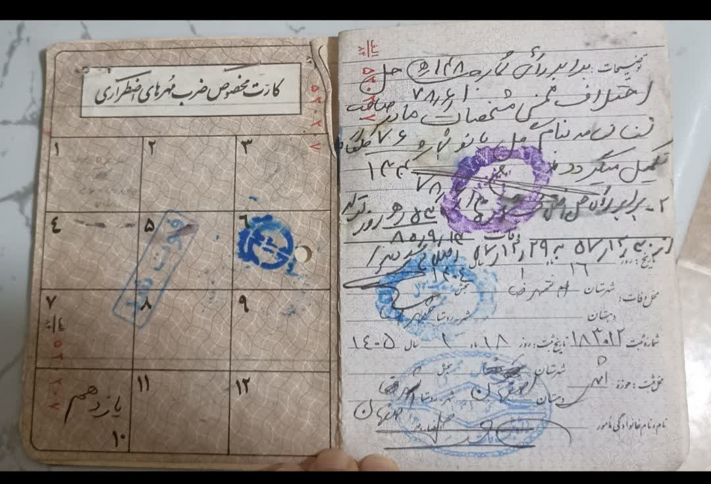